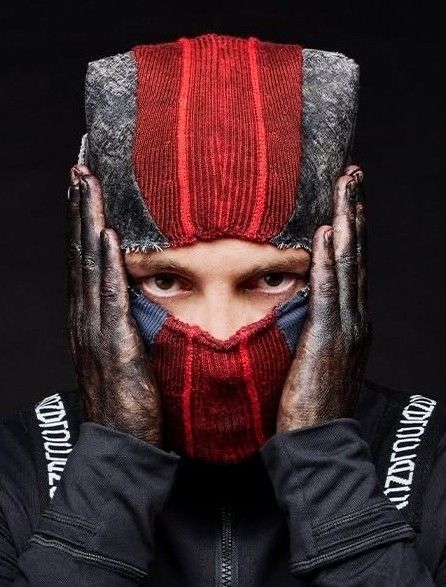
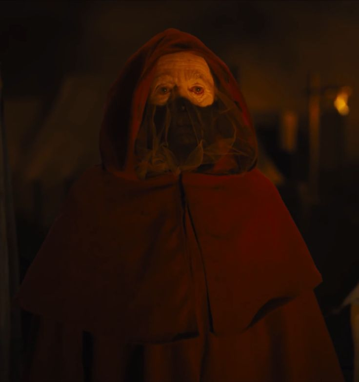

Es un dúo musical estadounidense cuyo estilo combina el hiphop, el metal y el rock independiente. Después de distintos cambios de alineación en sus orígenes, está formado desde 2011 por Tyler Joseph y Josh Dun.


Al inicio, la banda tocaba en clubes pequeños en Columbus y participaba en concursos, destacando por sus presentaciones con máscaras y acrobacias en el escenario.

La banda lanzó de forma independiente dos álbumes, Twenty One Pilots (2009) y Regional at Best (2011), antes de firmar con el sello discográfico Fueled by Ramen en 2012.

Vessel (2013) se convirtió en un álbum histórico, ya que todas sus canciones obtuvieron certificaciones de oro o platino, logrando que Twenty One Pilots fuera la primera banda en conseguirlo en dos álbumes.

Este éxito se multiplicó con su cuarto álbum, Blurryface (2015). A este le siguió Trench (2018) y Scaled and Icy , lanzado el 21 de mayo de 2021.


¿Qué representa el símbolo de Twenty One Pilots? Según Joseph, el símbolo de la banda es un estímulo para crear. “No tiene que ser artístico, pero si creas algo y solo tú sabes su significado, ese es el comienzo de un propósito para ti.”
¿Cuál es el significado del nombre de Twenty One Pilots? Procede de una obra de teatro Arthur Miller. Representa el dilema entre seguir el camino fácil y hacer lo correcto.

El Rebelde
Residente de Dema que escribe cartas sobre su vida y lucha contra el sistema.

Guía
Miembro de los Banditos con la habilidad de guiar a otros entre mundos.

Malo
El más poderoso de los obispos. Misterioso y aterrador.
Criatura
Ser especial que otorga habilidades a Clancy. Vive en Volsoy.